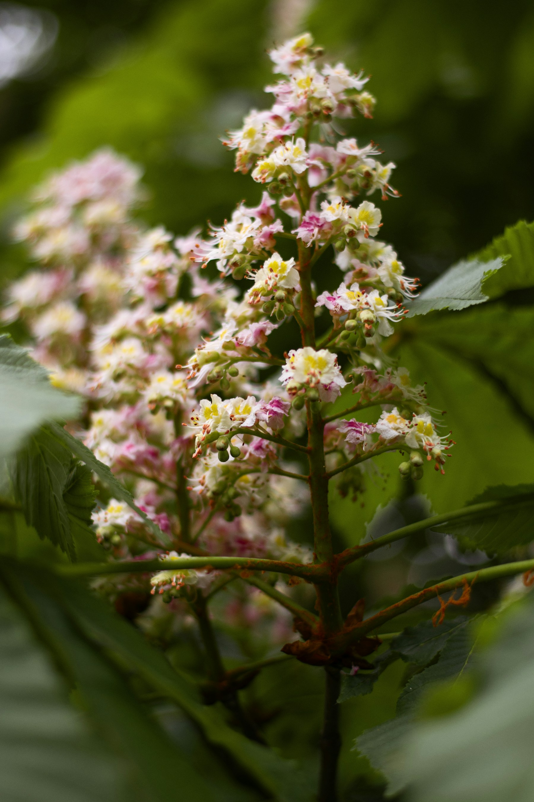
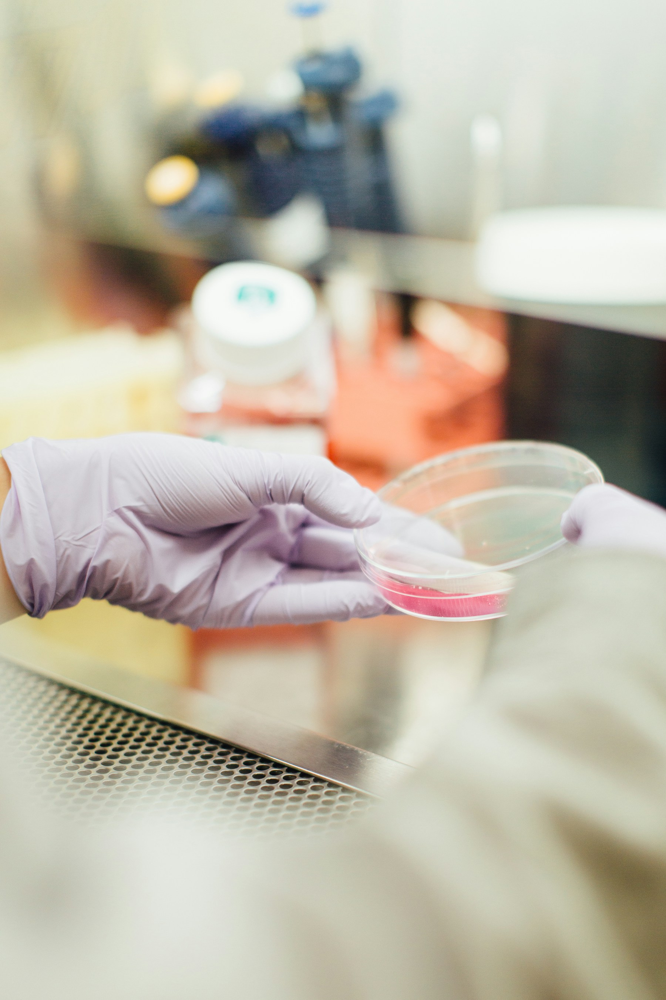
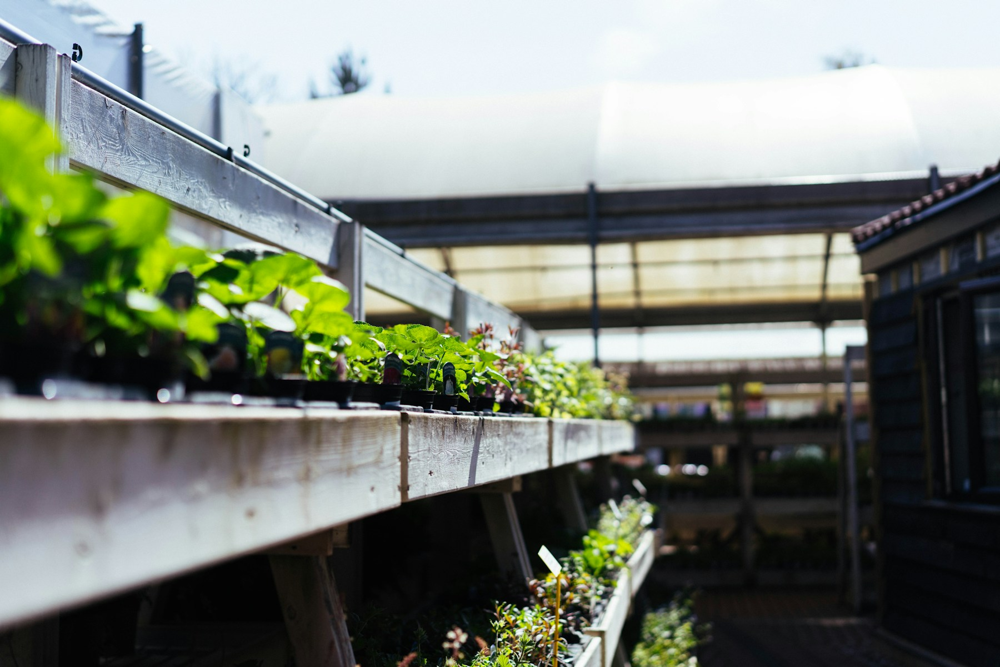
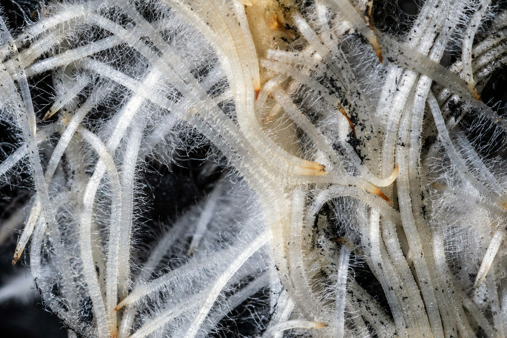
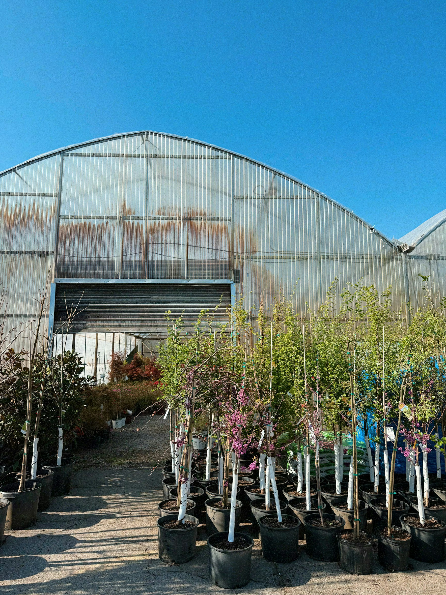

marronesdelsur aplica técnicas modernas de propagación in vitro para la reproducción de plantas de castaño cuando la reproducción convencional no es suficiente para responder a la demanda del mercado.
Micropropagación
La micropropagación vegetativa es una técnica utilizada para la producción de plantas a gran escala.
Se conoce habitualmente como clonación de plantas y se basa en la producción de miles de plantas a partir de una única planta madre seleccionada según las características deseadas por el productor. Luego se somete a controles de calidad y desinfección para garantizar su calidad fitosanitaria.
Esta planta madre permite una producción con crecimiento exponencial en poco tiempo y menor espacio comparado con métodos convencionales.
Al realizarse en laboratorios especializados, se puede definir cantidad, tiempo y características del lote, asegurando uniformidad genética entre plantas.

FASE 1Selección y preparación de planta madre
La planta madre se selecciona e identifica en campo y se recoge material vegetal para la fase siguiente.

FASE 2Establecimiento in vitro
El material vegetal se trata con agentes desinfectantes para garantizar calidad fitosanitaria.

FASE 3Multiplicación in vitro
Los explantes se colocan en medios asépticos que favorecen multiplicación y elongación de brotes.

FASE 4Enraizamiento in vitro
Se promueve la formación de raíces adventicias en las plántulas tras la fase de multiplicación.

FASE 5Aclimatización ex vitro
Las plántulas se adaptan gradualmente a condiciones ambientales antes de salir a vivero o finca.
Fotografías de referencia (vivero, laboratorio y cultivo) bajo licencia Unsplash.